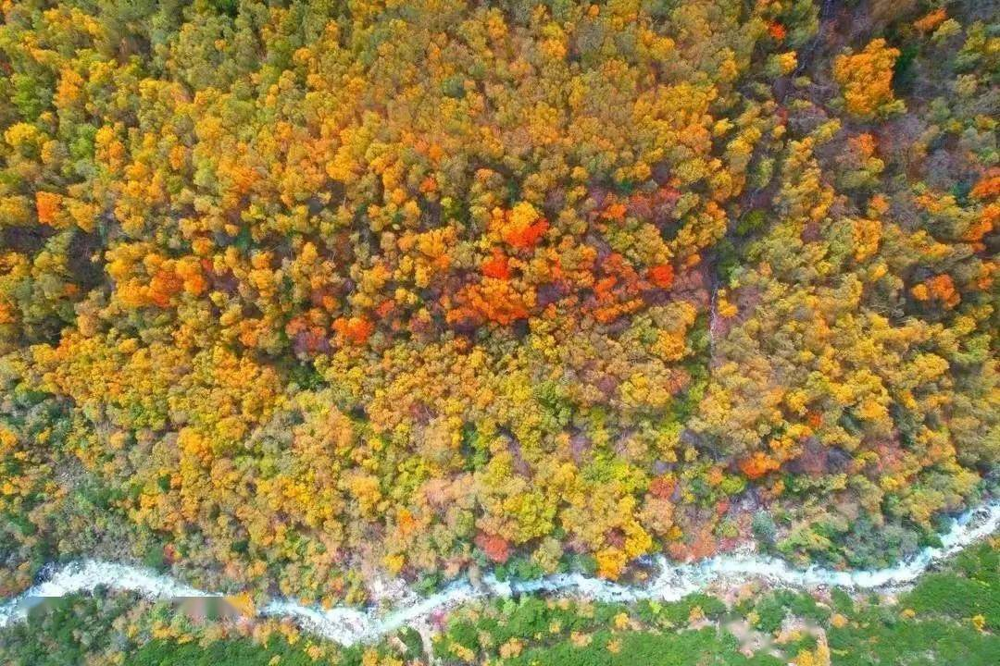
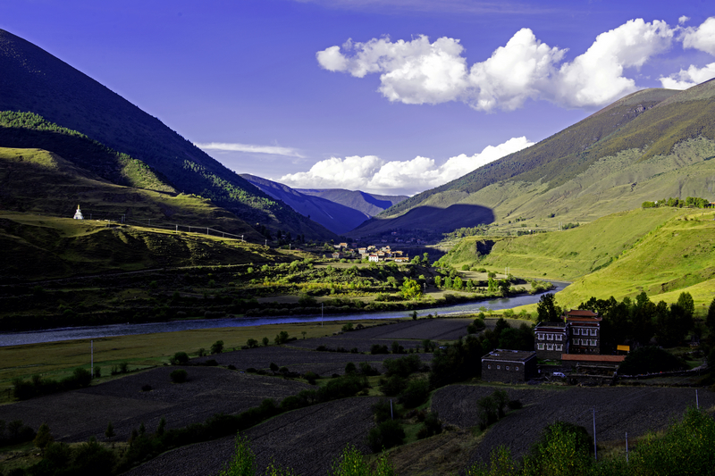

日车村 · 网红木桥
日车村百年木桥与金色杨林
横跨在清澈见底的雪山融水溪流之上，古老质朴的榫卯木桥历经岁月沉淀。两岸挺拔的杨树和俄色树在 10 月中下旬全部变成灿烂的柠檬金黄，落叶随溪流漂泊，宛如莫奈笔下的田园油画。
📸 机位与光线： 清晨 08:30-09:30，晨雾尚未散去，日光穿透杨树林形成神圣的丁达尔丁束，站在木桥中央回望拍摄文艺慢调大片。

横跨在清澈见底的雪山融水溪流之上，古老质朴的榫卯木桥历经岁月沉淀。两岸挺拔的杨树和俄色树在 10 月中下旬全部变成灿烂的柠檬金黄，落叶随溪流漂泊，宛如莫奈笔下的田园油画。

提吾村 · 溪畔露营平缓开阔的溪流滩涂旁铺展着柔软的天然草坪，砌石精巧的木雅特色藏房升起袅袅炊烟。青稞架金黄耸立，牛羊安详吃草，海拔 3200 米含氧量极高，是川西最舒适的放空避难所。